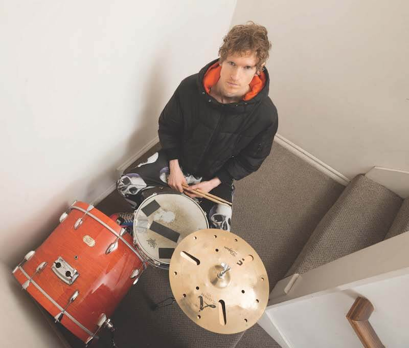
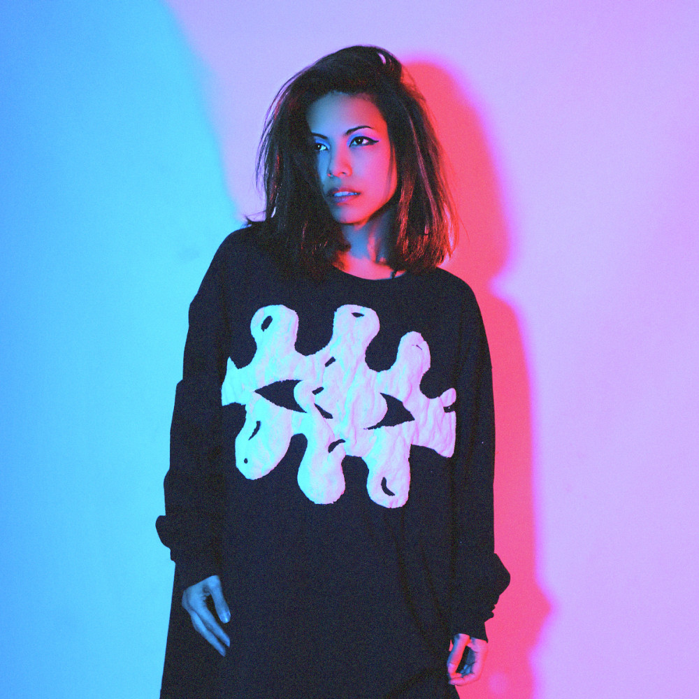

KNOWER: Louis Cole & Genevieve Artadi
KNOWER è un duo di musica elettronica indipendente americano che ha ottenuto successo pubblicando musica online. Il gruppo è composto da Louis Cole e Genevieve Artadi. La loro band completa è un atto jazz-funk che include sassofonisti, bassi e tastieristi.

Louis Cole

Genevieve Artadi
La Storia
Louis Cole ha studiato musica a Los Angeles in California, terminando gli studi nel programma di studio Jazz alla USC Thornton nel 2009. Nel 2006 diventa buon amico del musicista Jack Conte. I due hanno composto e registrato alcune canzoni che possono essere ascoltate sul canale YouTube di Jack Conte. Fu Conte stesso a dare il consiglio a Cole di caricare la sua musica su YouTube. Anche Genevieve Artadi ha studiato musica a Los Angeles. Si è laureata in studio del Jazz alla California State University (CSU) Northridge e proseguí gli studi alla CSU Long Beach. Louis Cole incontrò Genevieve Artadi tramite il sassofonista di Los Angeles Robby Marshall. Nel 2009 Cole e Artadi iniziarono a suonare insieme, rilasciando il loro primo album nel 2010. Creano ancora musica da solisti nei loro rispettivi canali YouTube, spesso collaborando nella realizzazione delle canzoni altrui.
La Discografia
Album
| Titolo | Dettagli |
|---|---|
| Louis Cole and Genevieve Artadi |
|
| Think Thoughts |
|
| Let Go |
|
| Life |
|
Singoli
| Titolo | Anno |
|---|---|
| It Goes On | 2011 |
| Burn | 2013 |
| I Must Be Dreaming | 2014 |
| Pizza | 2016 |
| One Hope | 2018 |
| Different Lives | 2020 |